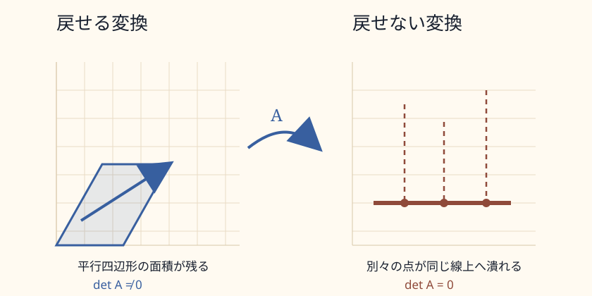

0. このページの位置づけ
このページでは、基底変換のあとに出てきた逆行列を扱う。前のページでは、同じベクトルを別のものさしで測るために、基底を列に並べた行列 \(B\) を使った。
そこで出てきた関係は、
である。これは、B座標で書かれた成分を、標準座標へ翻訳する式だった。
しかし、逆向きに知りたいことがある。標準座標で与えられたベクトルを、B座標ではどう書くのか。このとき必要になるのが逆行列である。
1. なぜ逆行列が出てくるのか
基底を列に並べた行列 \(B\) は、B座標を標準座標へ翻訳する装置である。
たとえば、B座標で
と書かれたベクトルが、標準座標では
になる、というようなことが起きる。
では、反対に、標準座標で
と与えられたとき、B座標ではどう書けばよいのか。
この問いは、次の形になる。
つまり、未知なのは \(\mathbf v_B\) である。これを解くために、\(B\) の逆向きの変換が必要になる。
ここで \(B^{-1}\) が逆行列である。
2. 逆行列とは何か
ある正方行列 \(A\) に対して、次を満たす行列 \(A^{-1}\) が存在するとき、\(A^{-1}\) を \(A\) の逆行列という。
意味は単純である。\(A\) をかけたあとに \(A^{-1}\) をかけると元に戻る。逆に、\(A^{-1}\) をかけたあとに \(A\) をかけても元に戻る。
逆行列とは、ある線形変換を打ち消して、元の状態へ戻す線形変換である。
ただし、すべての行列に逆行列があるわけではない。逆行列を持つ行列は、正則行列、または可逆行列と呼ばれる。
3. 単位行列とは何か
上の式に出てきた \(I\) は単位行列である。二次元なら、
である。
単位行列は、何もしない変換である。
つまり、単位行列は、数でいう \(1\) に近い役割を持つ。数なら、
で元に戻る。行列では、
で元に戻る。
ただし、行列では順番が重要になる。一般に行列の積は交換できないため、逆行列では左右両方の関係を確認する。
4. 基底変換と逆行列
基底変換では、逆行列は単なる計算テクニックではない。ものさしを変えたときに、同じ対象を別の座標で読み直すための装置である。
基底 \(B\) を列に並べた行列は、B座標を標準座標へ送る。
逆に、標準座標をB座標へ戻すには、
とする。
ここで大事なのは、対象そのものが変わっているわけではないこと。変わっているのは表示である。
逆行列は、変換された対象を魔法のように過去へ戻す装置ではない。同じ対象を、別の座標系で読み直すための逆向きの翻訳である。
5. 戻せる変換とは何か
戻せる変換とは、異なる入力が異なる出力へ行く変換である。
もし、二つの異なるベクトル \(\mathbf u\) と \(\mathbf v\) が、同じ出力へ写ってしまうなら、出力だけを見ても、もとの入力が \(\mathbf u\) だったのか \(\mathbf v\) だったのか分からない。
このとき、変換は一意には戻せない。
反対に、異なる入力が必ず異なる出力へ行くなら、出力から入力を一意に復元できる。そのとき逆行列が存在する。

6. 行列式が0だと戻せない
二次元の線形変換では、行列式は面積の倍率を表す。
行列式が0でないなら、面積は0には潰れない。空間は伸びたり、縮んだり、回転したり、傾いたりしても、二次元の広がりを保っている。
この場合、逆行列が存在する。
一方で、行列式が0なら、面積が0に潰れる。平面が直線へ潰れたり、点へ潰れたりする。このとき、複数の入力が同じ出力へ重なる。
この場合、逆行列は存在しない。
行列式が0であるとは、空間のどこかの方向が潰れているということである。潰れた方向の違いは、出力側からは見えなくなる。
7. 逆行列と逆像は違う
ここで重要な区別がある。逆行列と逆像は違う。
逆行列は、行列 \(A\) に対して存在するかどうかが問われる、逆向きの線形変換である。
ただしこれは、\(A\) が正則で、ちゃんと戻せるときにだけ存在する。
一方、逆像は、逆行列が存在しない場合でも考えられる。
写像 \(F:X\to Y\) と、出力側の集合 \(B\subset Y\) に対して、
と書く。この \(F^{-1}\) は、必ずしも逆関数や逆行列ではない。記号は似ているが、「Bに入る入力全体を集める」という意味である。
たとえば、射影
には逆行列はない。\(z\) 成分が失われるからである。しかし、ある点 \((x,y)\) の逆像は考えられる。
つまり、逆行列は存在しないが、逆像は存在する。逆像は一点ではなく、一本の直線になる。
逆行列は「一意に戻す」ための装置である。逆像は「その出力に対応しうる入力全体」を集めたものである。
8. 次に進むこと
逆行列を理解すると、次に自然に出てくる問いは、「戻せないとき、何が失われているのか」である。
戻せない変換では、ある方向が潰れている。その潰れた方向を表すのが核であり、変換後に残った出力側の広がりを表すのが像である。
次のページでは、核・像・階数・退化次数をまとめて扱う。